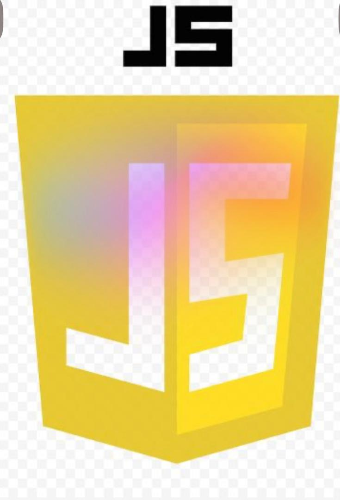

À propos de moi
Je suis Marieme Sabel Gomis, étudiante en Génie Logiciel et Administration Reseau, passionnée par le web et les bases de données. J’aime concevoir des applications robustes en PHP et MySQL, et je m’intéresse aussi à l’intégration avec d’autres langages comme C et Python.
Mon objectif est de créer des solutions simples, efficaces et accessibles. J’apprends en construisant des projets concrets, comme des systèmes de gestion scolaire ou des applications de contacts.
En dehors du code, je suis curieuse, persévérante et toujours prête à relever de nouveaux défis techniques.
Mon parcours académique
- 2014-2015 : Certificat de Fin d'Ètude Èlémentaire (CFEE)
Saint Abraham - 2019-2020 : Brevet de Fin d'Ètude Moyen ( BFEM)
Groupe Scolaire De Baobab ( A.L.G) - 2023-2024 : Baccaulaureat (BAC)
Groupe Scolaire De Baobab ( A.L.G)
Mes compétences Techniques
Ètant une débutante dans le domaine je maitrise que ces langages, outils et technologie
Mes Langages


